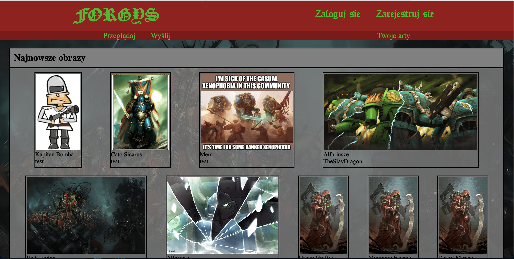
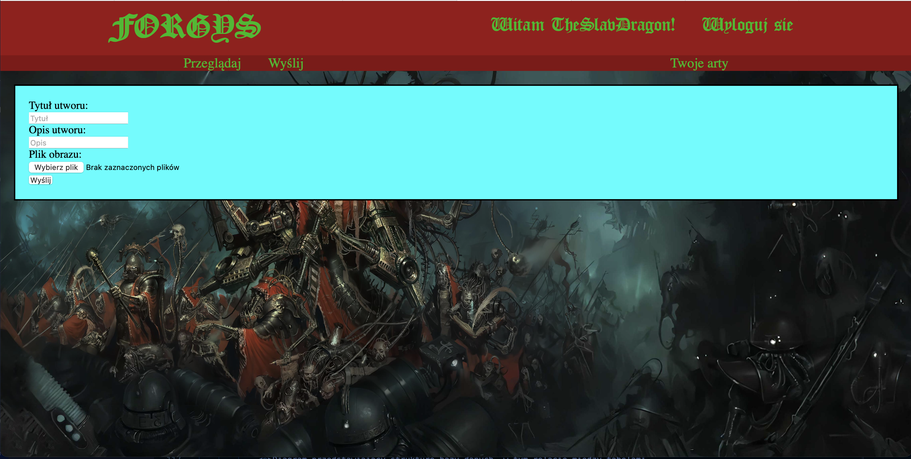

7. Zrzuty ekranu i opisy
Ekran główny
Ekran główny aplikacji, gdzie użytkownik widzi listę dostępnych artów.
Dodawanie artów
Formularz do dodawania nowych artów.
Twoje arty

Lista dodanych przez siebie artów
Galeria Forgys - Aplikacja do zarządzania artami i ich ulubionymi.
Imię i nazwisko autorów: Grzegorz Laskowski, Piotr Wasilewski
Celem aplikacji jest stworzenie platformy do publikacji, przeglądania i zarządzania artami graficznymi. Użytkownicy mogą dodawać swoje dzieła, przeglądać prace innych, a także dodawać wybrane art do ulubionych.
Prace zostały podzielone według następujących ról:
Kod źródłowy aplikacji dostępny jest na GitHub: https://github.com/TheNuclearSlavDragon/ForgysProjektPodstawyWWW/
Ekran główny aplikacji, gdzie użytkownik widzi listę dostępnych artów.
Formularz do dodawania nowych artów.
Lista dodanych przez siebie artów
Diagram przedstawiający strukturę bazy danych, w tym relacje między tabelami `users`, `arts`, `roles`, oraz `likes`.